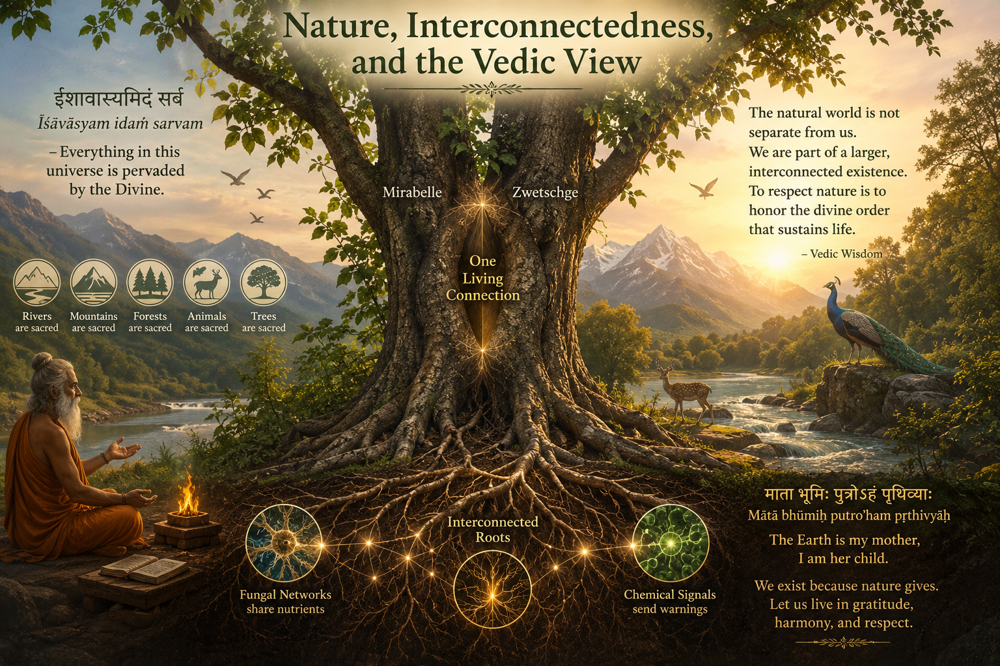

What My Mirabelle and Zwetschge Taught Me About
Nature
🌿Note: This article is intended for reflection and sharing knowledge. It is not written for
debate, but for thoughtful exchange of perspectives.
🎧Listen to this article
Narrated reading · English
In my garden, something unusual happened over many years without any human intervention.
I originally planted a Zwetschge tree. Later, somehow, a Mirabelle appeared beside it — probably from a
seed carried by birds, animals, or simply by chance. Instead of competing completely separately, both
trees grew so closely together that their trunks slowly fused into one intertwined structure.
At first glance, it looks like a single tree with multiple stems. But in reality, it is the result of a
fascinating natural process called inosculation — the natural fusion of trees.
🔬 The Process: How Trees Merge
Trees contain a living layer beneath their bark called the cambium. This layer is
responsible for growth and transport of water and nutrients.
When two young trunks grow extremely close together, wind and movement can cause their bark to rub
against each other. Over time, parts of the bark wear away and the cambium layers become exposed.
Instead of rejecting each other, the trees begin healing the contact area. New tissue grows across the
gap, and eventually both trunks become biologically connected. The wood, vascular tissue, and outer bark
slowly merge.
Nature performs its own form of grafting.
In orchards, humans intentionally graft related fruit trees together.
In my garden, nature did it on its own.
🌱 Why Does This Happen?
At first, this phenomenon may seem strange. Why would trees merge instead of simply pushing each other
away?
The answer lies in survival and efficiency. Trees are living systems optimized for:
stability,
energy transport,
healing,
and adaptation.
When fusion improves structural support or resource transport, evolution does not prevent it. In some
situations, fusion may even increase the chance of survival.
In forests, trees can also connect underground through root grafts and fungal networks. Scientists have
observed nutrient sharing between neighboring trees, including support for damaged or weakened trees.
This challenges the old idea that nature is only based on pure competition.
⚖️ Survival of the Fittest — But Not Only Through Competition
My tree also tells another story.
Originally, the Zwetschge was dominant. But over time, the Mirabelle became stronger, larger, and more
vigorous. Today, around 90% of the tree appears to be Mirabelle, while only a smaller part of the
Zwetschge remains.
This reflects the principle of "survival of the fittest." The stronger tree captured more
sunlight, produced more energy, and gradually dominated the shared structure. But interestingly, the
weaker tree did not disappear completely.
Because of the fusion, the smaller Zwetschge may have survived longer than it otherwise would have. The
larger Mirabelle likely provided structural support and possibly even indirect nutrient transport
through
the shared vascular connection.
Nature therefore shows two forces at the same time: competition and
cooperation.
🍄 Communication and Social Behavior in Trees
Modern research increasingly suggests that trees are not isolated organisms. Through roots and fungal
networks, trees can:
exchange nutrients,
send chemical warning signals,
react to insect attacks,
and influence neighboring plants.
Some scientists even describe forests as interconnected communities rather than
collections of individual trees.
My fused Mirabelle and Zwetschge are a visible example of this interconnectedness. They began as
separate organisms. Over time, they adapted to each other, physically merged, and now exist as a
partially shared system.
The tree almost resembles a natural metaphor for society itself:
individuality still exists, but survival becomes stronger through connection.
🕉️ Nature, Interconnectedness, and the Vedic View

Looking at the fused Mirabelle and Zwetschge in my garden, I was reminded of an idea deeply rooted in
the Vedic worldview: nature itself is sacred.
In many ancient Indian traditions, divinity is not limited to temples or rituals. The natural world
itself is treated as worthy of reverence. Rivers, mountains, forests, animals, and trees are seen as
part of a larger interconnected existence.
At the heart of this worldview lies a famous Sanskrit phrase from the Isha Upanishad:
Īśāvāsyam idaṁ sarvamईशावास्यमिदं सर्वम्— Isha Upanishad (Yajurveda)"All this universe is pervaded by the Divine."
The Isha Upanishad is an ancient Sanskrit philosophical text that forms part of the Yajurveda and is
considered one of the principal Upanishads.
The phrase expresses the idea that divinity is not separate from nature or existence, but present
throughout all life and the universe itself.
In this perspective, rivers, forests, mountains, animals, and trees are not merely resources for human
use, but part of a larger interconnected reality worthy of reverence and respect.
Modern science describes how trees exchange nutrients, chemically signal danger, and even support
neighboring organisms through underground networks. My own tree seems to reflect this
interconnectedness physically: two separate trees gradually adapting, merging, competing, and at the
same time coexisting.
One tree became dominant. The other survived within the shared structure. Competition and cooperation
existed simultaneously.
Perhaps this is why many ancient traditions viewed nature with such respect. Not because trees are
"gods" in a literal simplistic sense, but because nature reflects an extraordinary complexity, balance,
and interconnectedness that humans are still trying to fully understand.
Human existence itself is only possible because of nature. Every breath we take, every fruit we eat,
every source of water, energy, and life ultimately comes from the natural world. Humanity does not stand
outside nature or above it — we exist entirely within its system.
The fused tree in my garden became more than a botanical curiosity for me. It became a reminder that
life often survives not only through strength alone, but also through connection — and that nature
itself is far more powerful, interconnected, and intelligent than we often realize.
❖ ❖ ❖
🌿Footnote: This article is intended to provide food for thought and reflection. It is not
meant for debate, but rather for the exchange of knowledge and perspectives.
🌳 जब दो पेड़ एक हो जाते हैं
मेरे मिराबेल और ज़्वेट्शगे ने मुझे प्रकृति के
बारे में क्या सिखाया
🌿नोट: यह लेख विचार और चिंतन के लिए है। यह बहस के लिए नहीं, बल्कि ज्ञान और दृष्टिकोण के
आदान-प्रदान के लिए है।
🎧इस लेख को सुनें
वाचन · हिंदी
मेरे बगीचे में, बिना किसी मानवीय हस्तक्षेप के, कई वर्षों में कुछ असाधारण हुआ।
मैंने मूल रूप से एक ज़्वेट्शगे पेड़ लगाया था। बाद में, किसी तरह, उसके पास एक मिराबेल उग आई — शायद
पक्षियों,
जानवरों द्वारा लाए गए बीज से, या केवल संयोग से। अलग-अलग प्रतिस्पर्धा करने के बजाय, दोनों पेड़ इतने करीब
बढ़े
कि उनके तने धीरे-धीरे एक जटिल संरचना में मिल गए।
पहली नज़र में, यह कई तनों वाला एक ही पेड़ लगता है। लेकिन वास्तव में, यह इनोस्क्युलेशन
नामक एक
आकर्षक प्राकृतिक प्रक्रिया का परिणाम है — पेड़ों का प्राकृतिक संलयन।
🔬 प्रक्रिया: पेड़ कैसे मिलते हैं
पेड़ों की छाल के नीचे एक जीवित परत होती है जिसे कैम्बियम कहते हैं। यह परत वृद्धि और
पानी व
पोषक तत्वों के परिवहन के लिए जिम्मेदार होती है।
जब दो युवा तने बहुत करीब बढ़ते हैं, तो हवा और हलचल के कारण उनकी छाल आपस में रगड़ सकती है। समय के साथ,
छाल
के हिस्से घिस जाते हैं और कैम्बियम परतें उजागर हो जाती हैं। एक-दूसरे को अस्वीकार करने के बजाय, पेड़
संपर्क
क्षेत्र को ठीक करना शुरू कर देते हैं और अंततः दोनों तने जैविक रूप से जुड़ जाते हैं।
प्रकृति अपना स्वयं का कलम-बंधन करती है।
बागों में मनुष्य जानबूझकर संबंधित फल पेड़ों को एक साथ जोड़ता है।
मेरे बगीचे में, प्रकृति ने यह अपने आप किया।
🌱 यह क्यों होता है?
इसका उत्तर अस्तित्व और दक्षता में निहित है। पेड़ जीवित तंत्र हैं जो इनके लिए अनुकूलित
हैं:
स्थिरता,
ऊर्जा परिवहन,
उपचार,
और अनुकूलन।
जंगलों में, पेड़ जड़ों और कवक नेटवर्क के माध्यम से भूमिगत भी जुड़ सकते हैं। वैज्ञानिकों ने पड़ोसी पेड़ों
के बीच पोषक तत्वों के आदान-प्रदान को देखा है। यह पुरानी धारणा को चुनौती देता है कि प्रकृति केवल शुद्ध
प्रतिस्पर्धा पर आधारित है।
⚖️ योग्यतम की उत्तरजीविता — लेकिन केवल प्रतिस्पर्धा से नहीं
मूल रूप से ज़्वेट्शगे प्रभावशाली थी। लेकिन समय के साथ, मिराबेल अधिक मजबूत और जोरदार हो गई। आज, पेड़ का
लगभग 90% मिराबेल प्रतीत होता है, जबकि ज़्वेट्शगे का केवल एक छोटा हिस्सा बचा है।
मजबूत पेड़ ने अधिक धूप पकड़ी, अधिक ऊर्जा उत्पन्न की, और धीरे-धीरे साझा संरचना पर हावी हो गया। लेकिन
दिलचस्प बात यह है कि कमजोर पेड़ पूरी तरह से गायब नहीं हुआ।
प्रकृति इसलिए एक साथ दो शक्तियाँ दिखाती है: प्रतिस्पर्धा और सहयोग।
🍄 पेड़ों में संचार और सामाजिक व्यवहार
आधुनिक शोध तेजी से सुझाव देते हैं कि पेड़ अलग-थलग जीव नहीं हैं। जड़ों और कवक नेटवर्क के माध्यम से, पेड़
कर सकते हैं:
पोषक तत्वों का आदान-प्रदान,
रासायनिक चेतावनी संकेत भेजना,
कीट हमलों पर प्रतिक्रिया करना,
और पड़ोसी पौधों को प्रभावित करना।
पेड़ लगभग समाज के लिए एक प्राकृतिक रूपक जैसा दिखता है:
व्यक्तित्व अभी भी मौजूद है, लेकिन संबंध के माध्यम से अस्तित्व मजबूत होता है।
🕉️ प्रकृति, परस्पर संबंध और वैदिक दृष्टिकोण
अपने बगीचे में मिले हुए मिराबेल और ज़्वेट्शगे को देखते हुए, मुझे वैदिक विश्वदृष्टि में गहराई से निहित एक
विचार याद आया: प्रकृति स्वयं पवित्र है।
कई प्राचीन भारतीय परंपराओं में, दिव्यता मंदिरों या अनुष्ठानों तक सीमित नहीं है। प्राकृतिक जगत को स्वयं
श्रद्धा के योग्य माना जाता है। नदियाँ, पहाड़, वन, जानवर और पेड़ एक बड़े परस्पर जुड़े अस्तित्व का हिस्सा
हैं।
इस विश्वदृष्टि के केंद्र में ईशा उपनिषद का एक प्रसिद्ध संस्कृत वाक्यांश है:
Īśāvāsyam idaṁ sarvamईशावास्यमिदं सर्वम्— ईशा उपनिषद (यजुर्वेद)"यह समस्त ब्रह्मांड दिव्य सत्ता से व्याप्त है।"
ईशा उपनिषद एक प्राचीन संस्कृत दार्शनिक ग्रंथ है जो यजुर्वेद का भाग है और इसे प्रमुख उपनिषदों में से एक
माना जाता है।
यह वाक्यांश इस विचार को व्यक्त करता है कि दिव्यता प्रकृति या अस्तित्व से अलग नहीं है, बल्कि समस्त जीवन
और ब्रह्मांड में व्याप्त है।
इस दृष्टिकोण में, नदियाँ, वन, पहाड़, जानवर और पेड़ केवल मानव उपयोग के संसाधन नहीं हैं, बल्कि एक बड़ी
परस्पर जुड़ी वास्तविकता का हिस्सा हैं जो श्रद्धा और सम्मान के योग्य है।
आधुनिक विज्ञान बताता है कि पेड़ कैसे पोषक तत्वों का आदान-प्रदान करते हैं, रासायनिक संकेत भेजते हैं, और
भूमिगत नेटवर्क के माध्यम से पड़ोसी जीवों की सहायता करते हैं। मेरा अपना पेड़ इस परस्पर संबंध को भौतिक रूप
से दर्शाता है: दो अलग पेड़ धीरे-धीरे अनुकूलित हुए, मिले, प्रतिस्पर्धा की, और एक साथ सहअस्तित्व में रहे।
एक पेड़ प्रभावशाली हो गया। दूसरा साझा संरचना के भीतर जीवित रहा। प्रतिस्पर्धा और सहयोग एक साथ विद्यमान
रहे।
मानव अस्तित्व केवल प्रकृति के कारण ही संभव है। हमारी हर सांस, हर फल, जीवन का हर स्रोत अंततः प्राकृतिक
दुनिया से आता है। मानवता प्रकृति के बाहर या उससे ऊपर नहीं है — हम पूरी तरह से उसके तंत्र में विद्यमान
हैं।
मेरे बगीचे में मिला हुआ पेड़ मेरे लिए एक वनस्पति जिज्ञासा से अधिक बन गया। यह एक स्मरण बन गया कि जीवन
अक्सर केवल शक्ति से नहीं, बल्कि संबंध के माध्यम से भी जीवित रहता है — और प्रकृति स्वयं कहीं अधिक
शक्तिशाली, परस्पर जुड़ी और बुद्धिमान है जितना हम अक्सर महसूस करते हैं।
❖ ❖ ❖
🌿टिप्पणी: यह लेख विचार और चिंतन के लिए प्रेरित करने के उद्देश्य से लिखा गया है। इसका
उद्देश्य बहस करना नहीं है, बल्कि ज्ञान और दृष्टिकोणों के आदान-प्रदान को बढ़ावा देना है।
🌳 Wenn zwei Bäume eins werden
Was mir meine Mirabelle und Zwetschge über die
Natur gelehrt haben
🌿Hinweis: Dieser Artikel ist zum Nachdenken und zum Austausch von Wissen gedacht. Er ist
nicht für Debatten bestimmt, sondern für einen nachdenklichen Austausch von Perspektiven.
🎧Diesen Artikel anhören
Vorgelesener Beitrag · Deutsch
In meinem Garten geschah über viele Jahre hinweg etwas Ungewöhnliches — ohne jegliches menschliches
Eingreifen. Ursprünglich hatte ich einen Zwetschgenbaum gepflanzt. Später tauchte irgendwie eine
Mirabelle daneben auf — wahrscheinlich aus einem Samen, den Vögel, Tiere oder einfach der Zufall
gebracht hatten. Anstatt vollständig getrennt zu konkurrieren, wuchsen beide Bäume so eng zusammen,
dass ihre Stämme sich langsam zu einer verflochtenen Struktur vereinten.
Auf den ersten Blick sieht es wie ein einzelner Baum mit mehreren Stämmen aus. In Wirklichkeit ist es
jedoch das Ergebnis eines faszinierenden natürlichen Prozesses namens Inoskulation —
die natürliche Verschmelzung von Bäumen.
🔬 Der Prozess: Wie Bäume verschmelzen
Bäume enthalten eine lebende Schicht unter ihrer Rinde, die als Kambium bezeichnet
wird. Diese Schicht ist für das Wachstum und den Transport von Wasser und Nährstoffen verantwortlich.
Wenn zwei junge Stämme extrem nah beieinander wachsen, können Wind und Bewegung dazu führen, dass ihre
Rinde aneinanderreibt. Mit der Zeit nutzt sich die Rinde ab und die Kambiumschichten werden freigelegt.
Anstatt sich gegenseitig abzustoßen, beginnen die Bäume, den Berührungsbereich zu heilen, und
schließlich werden beide Stämme biologisch verbunden.
Die Natur führt ihr eigenes Pfropfen durch.
In Obstgärten pfropfen Menschen verwandte Obstbäume absichtlich zusammen.
In meinem Garten hat die Natur es von selbst getan.
🌱 Warum geschieht das?
Die Antwort liegt in Überleben und Effizienz. Bäume sind lebende Systeme, die
optimiert sind für: Stabilität, Energietransport, Heilung und Anpassung.
In Wäldern können sich Bäume auch unterirdisch durch Wurzelverbindungen und Pilznetzwerke verbinden.
Wissenschaftler haben den Nährstoffaustausch zwischen benachbarten Bäumen beobachtet — darunter auch
die Unterstützung beschädigter oder geschwächter Bäume. Dies stellt die alte Idee in Frage, dass die
Natur nur auf reinem Wettbewerb basiert.
⚖️ Überleben des Stärkeren — aber nicht nur durch Wettbewerb
Ursprünglich war die Zwetschge dominant. Aber mit der Zeit wurde die Mirabelle stärker, größer und
kräftiger. Heute scheinen etwa 90 % des Baumes Mirabelle zu sein, während nur ein kleinerer Teil der
Zwetschge übrig bleibt.
Dies spiegelt das Prinzip des "Überleben des Stärkeren" wider. Der stärkere Baum fing mehr
Sonnenlicht ein, produzierte mehr Energie und dominierte allmählich die gemeinsame Struktur.
Interessanterweise verschwand der schwächere Baum jedoch nicht vollständig.
Die Natur zeigt daher zwei Kräfte gleichzeitig: Wettbewerb und
Zusammenarbeit.
🍄 Kommunikation und soziales Verhalten bei Bäumen
Moderne Forschungen legen zunehmend nahe, dass Bäume keine isolierten Organismen sind. Über Wurzeln und
Pilznetzwerke können Bäume:
Nährstoffe austauschen,
chemische Warnsignale senden,
auf Insektenangriffe reagieren,
und benachbarte Pflanzen beeinflussen.
Einige Wissenschaftler beschreiben Wälder sogar als vernetzte Gemeinschaften und nicht
als Ansammlungen einzelner Bäume.
Der Baum ähnelt fast einer natürlichen Metapher für die Gesellschaft selbst:
Individualität existiert noch, aber das Überleben wird durch Verbindung stärker.
🕉️ Natur, Vernetzung und die vedische Sichtweise
Beim Betrachten der zusammengewachsenen Mirabelle und Zwetschge in meinem Garten wurde mir ein
Gedanke bewusst, der tief in der vedischen Weltanschauung verwurzelt ist:
Die Natur selbst ist heilig.
In vielen altindischen Traditionen ist die Göttlichkeit nicht auf Tempel oder Rituale beschränkt. Die
natürliche Welt selbst wird als verehrungswürdig betrachtet. Flüsse, Berge, Wälder, Tiere und Bäume
werden als Teil einer größeren, miteinander verbundenen Existenz gesehen.
Im Mittelpunkt dieser Weltanschauung steht ein berühmter Sanskrit-Satz aus der Isha Upanishad:
Īśāvāsyam idaṁ sarvamईशावास्यमिदं सर्वम्— Isha Upanishad (Yajurveda)„Dieses gesamte Universum ist von der Göttlichkeit durchdrungen."
Die Isha Upanishad ist ein alter Sanskrit-Philosophietext, der Teil des Yajurveda ist und als eine der
wichtigsten Upanishaden gilt.
Der Satz drückt die Idee aus, dass die Göttlichkeit nicht von der Natur oder der Existenz getrennt
ist, sondern durch alles Leben und das Universum selbst gegenwärtig ist.
In dieser Perspektive sind Flüsse, Wälder, Berge, Tiere und Bäume nicht nur Ressourcen für den
menschlichen Gebrauch, sondern Teil einer größeren vernetzten Wirklichkeit, die Ehrfurcht und Respekt
verdient.
Moderne Wissenschaft beschreibt, wie Bäume Nährstoffe austauschen, chemisch Gefahren signalisieren
und benachbarte Organismen über unterirdische Netzwerke unterstützen. Mein eigener Baum scheint diese
Vernetzung physisch widerzuspiegeln: zwei getrennte Bäume, die sich langsam anpassten, verschmolzen,
konkurrierten und gleichzeitig koexistierten.
Ein Baum wurde dominant. Der andere überlebte innerhalb der gemeinsamen Struktur. Wettbewerb und
Zusammenarbeit existierten gleichzeitig.
Die menschliche Existenz ist nur dank der Natur möglich. Jeder Atemzug, jede Frucht, jede Quelle des
Lebens kommt letztlich aus der natürlichen Welt. Die Menschheit steht nicht außerhalb oder über der
Natur — wir existieren vollständig in ihrem System.
Der zusammengewachsene Baum in meinem Garten wurde für mich mehr als eine botanische Kuriosität. Er
wurde zu einer Erinnerung daran, dass das Leben oft nicht nur durch Stärke, sondern auch durch
Verbindung überlebt — und dass die Natur selbst weit mächtiger, vernetzter und intelligenter ist,
als wir oft erkennen.
❖ ❖ ❖
🌿Anmerkung: Dieser Artikel soll zum Nachdenken und zur Reflexion anregen. Er ist nicht für
Debatten gedacht, sondern für den Austausch von Wissen und Perspektiven.